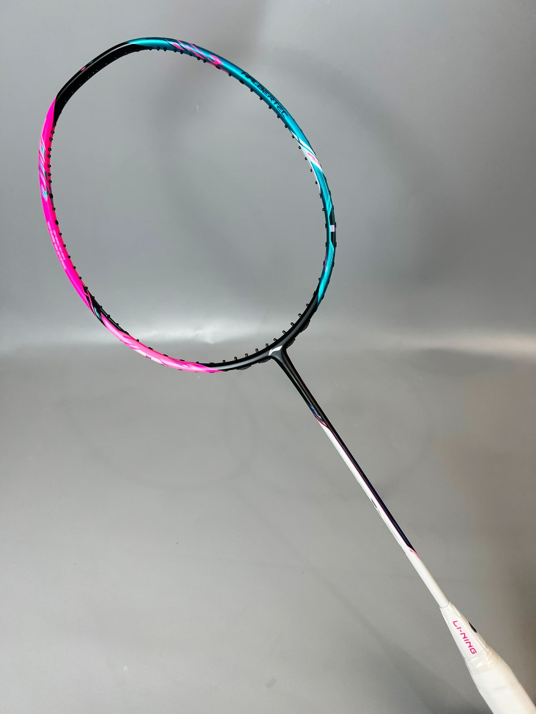

01 / Spend with purpose
Start with the essentials
Use a community club or beginner group to try equipment before buying. Ask about loan rackets and court-shoe requirements. If your budget is limited, put safe, well-fitting shoes and a manageable racket ahead of a premium string job or multiple rackets.
First session
Borrow a sound racket, wear secure non-marking court shoes, and bring comfortable sports clothing and water.
Regular play
Choose your own court shoes and racket, then add a spare grip, socks, towel, water bottle, and a small equipment bag.
Competition
Pack a second familiar racket if available, spare grips and strings, approved clothing, food you already tolerate, and tournament paperwork.
Skip for now
Beginners do not need a high-priced racket, maximum string tension, a supplement, or wearable performance gadgets.


02 / Find a racket you can control
How to choose a badminton racket
Rackets differ in mass, balance, shaft stiffness, grip size, frame shape, and stringing. These are interacting feel preferences—not a simple beginner-to-pro ranking. Demo a few rackets, if possible, with the same simple strokes and choose one that feels comfortable and predictable.
Comfort over a label
Racket weight codes such as 3U or 4U are not always identical between brands and refer to a weight range. A lighter model may feel easier to manoeuvre; a heavier-feeling one may feel more stable to some players. Test a full swing without pain or excessive effort.
Head-light, even, or head-heavy
Head-light rackets can feel quick in defence and drives; head-heavy ones may feel more substantial overhead; even balance sits between. None automatically creates power. Timing, technique, strength, and swing comfort matter much more.
Flex and timing
A more flexible shaft can feel forgiving for some swings; a stiffer shaft typically asks for quicker, well-timed input. Marketing categories differ, and a stiff racket is not a shortcut to advanced technique. Choose a shaft that lets you contact cleanly without forcing your swing.
Hold without squeezing
The handle should fit your hand so your fingers can wrap and adjust naturally. Grip wraps change the size and feel. A grip that is too large can make finger action awkward; one that is too small can encourage gripping too tightly. Replace a slippery or worn grip.
A practical racket demo
- Shortlist by comfort and budget. Check the model’s listed weight, balance, shaft stiffness, grip size, and maximum string tension. These labels help compare models but do not use identical scales across every maker.
- Try more than one if possible. Ask a club, coach, or shop about demo or loan rackets. Compare one feature at a time and use familiar shuttles, strings, and grips where you can.
- Test badminton movements, not just a shop swing. Try relaxed overhead clears, drives, blocks, and quick racket preparation. Notice whether the racket feels easy to start and stop, stable enough at contact, and comfortable after several minutes.
- Choose control and repeatability. A racket that lets you contact cleanly and defend comfortably is a better fit than one that feels powerful only on a few hard swings. If the forearm, wrist, or shoulder feels strained, stop the test and try a more manageable setup.
- Buy for your current game. You do not need a professional or competition model as a beginner. Avoid paying extra for technology claims that you cannot feel or explain in your own play.
03 / Racket setup
Choose strings and tension for your contact
String feel changes how the racket responds, but it cannot replace timing or technique. The “best” setup depends on the string model, frame, stringer, shuttle, conditions, and your contact quality. Start with a durable, commonly stocked badminton string and a comfortable, moderate setup that your stringer can explain.
Prioritize a predictable feel
Badminton strings are usually synthetic multifilament strings with different constructions and coatings. Some feel softer or livelier; others are chosen for durability or control. Product descriptions and feel are subjective, so ask a trusted stringer for a readily available option and keep it consistent while learning.
Thickness is a trade-off
Gauge is often printed as a diameter in millimetres; a larger diameter means a thicker string. Thinner strings are often marketed for feel or repulsion but can be less durable, especially with off-centre contact or frequent clashes. Thicker strings may last longer but can feel different at impact. Actual durability depends on the string, tension, frame, contact, and play frequency—not gauge alone.
Understand what the number means
String tension is the pull used during stringing, commonly shown in pounds (lb) or kilograms (kg); 1 kg is about 2.2 lb. It is not a direct measurement of how tight an old string bed feels after use. Follow the specific racket’s printed or manufacturer-published limit and the stringer’s guidance.
Use an experienced badminton stringer
Ask them to check the frame, grommets, requested tension, machine and pattern suitability, and whether the racket is appropriate for the job. Tell them how often you play, whether strings break or lose feel, and what you want to improve. Do not ask for a tension beyond the frame limit.
Match the string choice to the problem
Strings break often
Ask about a more durable, slightly thicker option and a sensible tension. Also mention off-centre hits or racket clashes; technique and contact may be part of the cause, so changing string alone may not solve it.
Learning contact
Choose a robust, readily available string at a moderate setup. Consistent contact and a comfortable feel are more useful than a thin, short-lived string chosen for a pro-level sensation.
Want a different feel
Ask the stringer to change one variable at a time—string model or tension—so you can tell what changed. Keep a note of the model, gauge, tension, date, and your impression.
Stringing a spare
When you can afford a second racket, keep its setup close to the familiar racket at first. A large difference in frame, weight, balance, string, or tension can make the spare feel unfamiliar during a match.
Choosing a first tension
If you are new to stringing, ask the stringer for a conservative, moderate starting tension within the racket maker’s range. A rough discussion range sometimes used for recreational setups is around 20–24 lb (about 9–11 kg), but this is only an example—not a universal recommendation: the right starting point may be lower or higher depending on the exact racket, string, stringer, player, and manufacturer limit. Use the racket’s own specification, not this example, as the ceiling.
- A lower tension may feel more forgiving on imperfect contact to some players; a higher tension can feel firmer and may reward accurate contact. Neither guarantees more power or control.
- Do not jump sharply in tension because a professional uses it or because a higher number sounds advanced. Change one setup variable at a time and give yourself time to assess it.
- Strings gradually lose tension and can break. If you hear a crack, see a broken string, or notice frame damage, stop playing and have the racket checked; do not keep hitting with a damaged frame.
- Ask a stringer whether a change is sensible if strings break unusually often, the frame is older or damaged, or you are unsure what tension the racket can safely take.
04 / Make the handle fit your hand
Choose a grip you can relax and adjust
Grip size depends on the handle underneath, the wrap, hand size, and personal feel. The goal is to hold the racket securely without squeezing continuously, while still being able to loosen the fingers, change forehand/backhand grip, and use finger action for a short stroke.
Test it with your normal hold
Hold the racket in your relaxed forehand grip and make a few gentle swings, then change to a backhand grip. The fingers should wrap comfortably and move; there is no one finger-gap measurement that fits every hand or grip style. Grip-size codes vary between manufacturers, so compare the actual feel instead of assuming a code means the same size across brands. A bulky handle may restrict finger movement; a very small handle can invite constant squeezing.
Know what is already on the handle
Most rackets arrive with a factory grip or base wrap. An overgrip is a thinner layer placed over an existing grip; a replacement grip is generally used to replace the base layer and can change cushioning and size more. Ask the shop or stringer what the racket currently has before adding another layer. Keep enough handle bevel feel to orient the racket in your fingers.
Choose dry, secure contact
Synthetic overgrips come in different thicknesses, textures, and absorbency. Towel grips absorb sweat but need more frequent care and can change handle size noticeably. Try a single wrap first, especially if you are unsure of the size; replace a slippery, worn, or unhygienic grip.
- Start from the handle as sold. Check whether a base grip is fitted and whether the size feels comfortable without extra layers.
- Add one wrap only if needed. A thin overgrip can refresh tackiness or alter feel slightly; adding several layers may make the handle too large and reduce finger control.
- Retest both grips. Check forehand and backhand changes, gentle drives, serves, and a relaxed overhead swing. The racket should not twist in your hand, but you should not have to clamp down.
- Maintain it. Keep the grip dry between sessions when possible. Replace it when worn, slick, or uncomfortable rather than trying to compensate by squeezing harder.
05 / Protect movement and grip
Badminton shoes are court equipment
Choose indoor court shoes with a non-marking outsole accepted by your venue and a secure fit for side-to-side movement, braking, and lunging. A badminton or indoor court model is designed around these movements more than a typical running shoe. Requirements differ by floor and player; no shoe can guarantee injury prevention.
Try both shoes. Check the heel stays secure, toes have comfortable room, and the forefoot can flex without rubbing.
Test court grip. Ask the venue about its floor and sole policy. A dusty outsole or worn tread may slide; clean soles and inspect them regularly.
Use appropriate socks. Choose socks that stay put and do not bunch inside the shoe; replace damp socks between long tournament sessions if practical.
Stop if the fit hurts. Do not buy smaller shoes to chase a tighter fit. Persistent discomfort is a reason to stop and reassess the shoe or seek qualified advice.
06 / Complete your kit
Shuttles, clothing, and useful extras
Feather shuttle
Often used for club and competitive play. Flight and touch can differ from plastic models; feathers are more delicate and need careful handling. Agree the shuttle with the club or partner.
Nylon shuttle
Often durable and useful for recreational practice. Its flight and feel differ from feather, so practise with the type you expect to use when you can.
Clothing
Wear lightweight clothes that allow overhead reach, lunges, and rotation. Choose layers and fabrics that suit the hall and the length of play.
Small extras
Carry water, a towel, spare socks, a spare grip, and a small first-aid kit for personal needs. Follow venue guidance for bags and equipment beside the court.
Shuttle speed is affected by the model and local conditions. In a club, follow the organiser’s shuttle choice and court rules rather than trying to alter a shuttle yourself.
07 / Make equipment last
Simple checks before you play
- Inspect the racket frame for cracks, loose grommets, and damaged strings before a session.
- Keep rackets away from extreme heat, and use a cover or bag for transport.
- Clean shoe soles and check tread, seams, and fit; retire shoes when they no longer feel stable or grip reliably.
- Do not play with a damaged racket or footwear that cannot support safe court movement.
Build your skills with the training library, then follow the development pathway as your needs change.